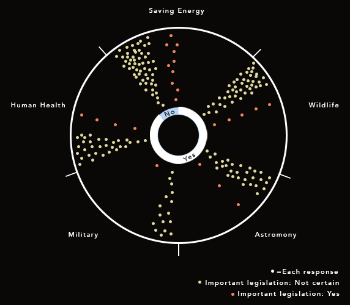

This data was taken from a group of 70 participants at the University of Southern California. The purpose of this data is to understand how individuals perceive, understand, and are affected by light pollution.
Some visualizations do not represent each and every response. For certain questions, individuals did not need to respond if it wasn't applicable to them.
Number of individuals previously familiar with the concept of light pollution. 1/10
1. General perceived level of outdoor nighttime brightness based on average night. Level 1 is dark as a natural night and 10 is bright as day.
2. Desired level of overall nighttime brightness for an average night. 2/10
The desired adjustment of artificial nighttime lighting. 3/10
Individual responses of the main sources of excessive artificial nighttime light.
4/10
If individuals believed artificial nighttime lighting should be reduced on campus, these are the areas. Dots represent one response. If an individual noted more than one place, the lines represent that connection. 5/10
Yes, no and not certain represent the responses on whether individuals believed excessive nighttime artificial lighting causes or contributes to sleep loss. The circles around yes represent the levels, 1 being a little and 10 being significantly. 6/10
Responses on the level individuals perceive excess light pollution causes or contributes to symptoms of anxiety, visual fatigue, fatigue, depression, or weariness. 7/10
Do you wish you could better see the stars at night? 8/10
 From the inside moving out, this represents responses on whether individuals would support legislation to reduce light pollution. It then shows for what reasons and whether individuals believe it would be important legislation. 9/10
Personal responses on how individuals perceive light pollution influencing personal wellbeing and humanity. 10/10